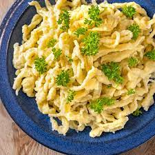

Spaetzle

Description
Spaetzle are a well known, traditional dish you will find all over Swabia in the south west of Germany.
It's some sort of pasta made from a dough that funnily is a non-Newtonian fluid!
Spaetzle can come in many different shapes, but the most well known one is the elongated
form you can see in the image above.
Due to the rough sourface they hold on to sauce and gravy.
However, the most traditional dish is Spaetzle with lentils and vienna sausage -
in Swabian: "Linsa mit Spaetzle und Saiten"
This recipe is enough for 2 people.
Don't panic, it's super easy! You just have to take your time in the beginning.
It's the only type of pasta that is there to look not perfect :)
Make sure you carry a towl with you!
Ingredients
- 150g All purpose Flour (Type 405 in Germany or dedicated Spaetzle flour)
- 2 Eggs (L)
- 50 ml water
- pinch of salt
Steps
- Mix all the ingredients in a large bowl with a wooden spoon.
- Put on some music and beat the dough with a wooden spoon untill it is a very smooth non-Newtonian fluid ;). This can take several minutes and requires a bit of muscles. Yes that's why Swabian chefs are sooooo strong!
- Cover the bowl with a towl/plastic wrap/a shower cap and set aside.
- Fill your largest pot with water and bring it to a boil.
- Prepare everything you need for cooking the spaetzle:
- A bowl with a cover for the finished spaetzle
- A slotted spoon
- A wooden board - a Spaetzlesbrett
- A butter knife or scraper
- As soon as the water is boiling put a dollop of dough onto the board, spread the dough towards the front and start scraping off little rolls of dough into the boiling water.
- When you have scrapte the dough into the water wait till all spaetzle have risen to the top.
- Use the slotted spoon to move the spaetzle into the waiting bowl and cover them.
- Continue untill no dough is left.
- Enjoy your first home made Spaetzle!